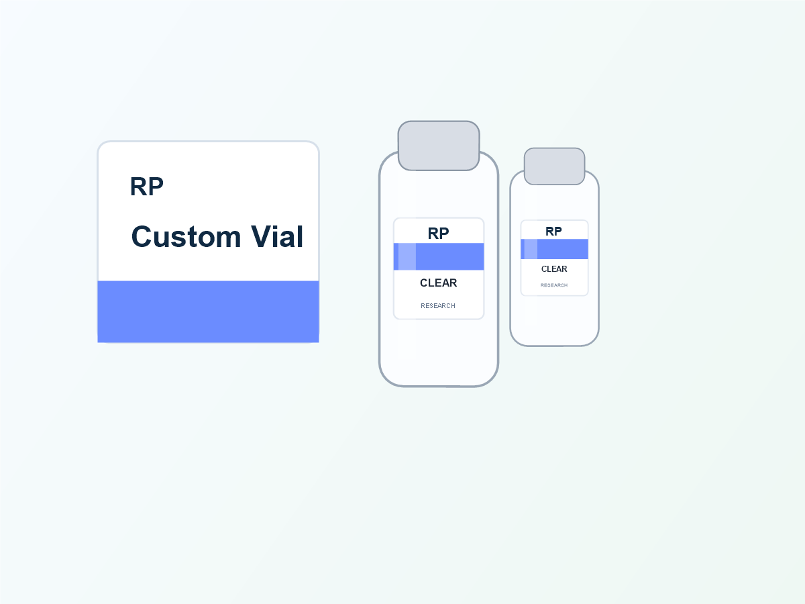
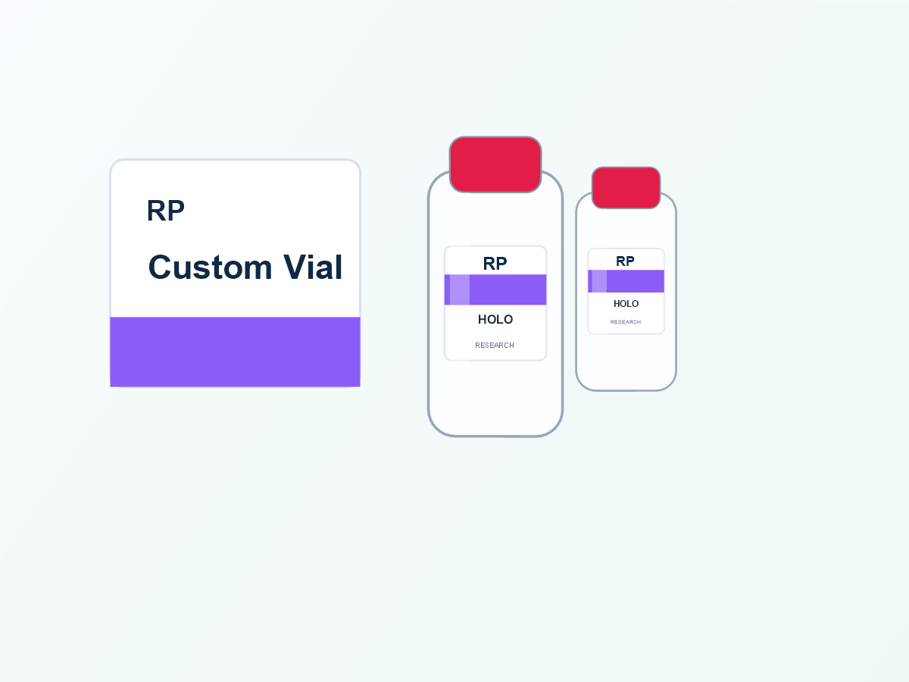

The most common label failures on small vials are not dramatic. The edge slowly lifts. The surface gets scuffed. Tiny text becomes hard to read. A clear label turns cloudy after handling. These are material and finish problems, not only design problems.

What waterproof should mean for vial labels
For small research bottle packaging, waterproof label planning should consider the label face, adhesive and printed surface. A waterproof film face is helpful, but the label can still fail if the adhesive is not suited to the bottle surface or if the print is not protected from rubbing.
Ask about the real handling condition: dry shelf display, refrigerated storage, ice pack shipping, frequent hand contact, alcohol wipe contact or oily fingers. These details change the material choice.
Material comparison for small vial labels
| White BOPP | A common choice for waterproof bottle labels. It gives strong print contrast and works well for small text, color bands and batch fields. |
|---|---|
| Clear film | Good for a clean no-label look, but text contrast needs careful proofing. White ink or bold dark text may be needed. |
| PET film | A durable option for buyers who want stronger film performance and a premium feel. It is useful when the label must look crisp on small bottles. |
| Holographic film | Useful for premium packaging or brand protection. Avoid weak gray text because the reflective background can reduce readability. |
| Paper label | Better for dry boxes or short-term uses. It is usually not the first choice for damp bottle handling. |
Cold handling is different from simple water resistance
Moisture can form on a cold bottle when it moves into a warmer room. That surface moisture can attack the label edge and make weak adhesives show quickly. If the bottle may be refrigerated or shipped with cold packs, tell the supplier before the proof is prepared.
A good production discussion should cover bottle material, expected temperature range, whether the bottle is labeled before or after filling, and whether the bottle surface may be wet during application.


Surface finish affects readability
Gloss lamination gives shine and can make colors feel brighter. Matte lamination reduces glare and often makes small text feel more controlled. For tiny vial labels, the finish should be chosen around readability first, not only appearance.
If you want a luxury look, combine premium material with a simple layout. A crowded holographic label can look less professional than a clean white BOPP label with strong color coding.
What to check in the proof
Waterproof label proof checklist
- Label size fits the straight wall of the vial
- Edges do not sit on the strongest curve of the bottle
- Small text remains readable at final printed size
- QR code or barcode has enough quiet space
- Material and finish match the handling condition
- Roll direction and label gap match your application method
When to choose waterproof plus oil-resistant labels
If bottles will be handled often, packed by hand or exposed to skincare oils, cleaning residue or general warehouse handling, ask for oil-resistant surface protection. This does not mean every chemical is covered. It means the material and surface finish should be discussed honestly before production.

Practical recommendation
For most custom peptide vial label projects, start with waterproof film material, strong text contrast and a free proof at the real label size. Use matte or gloss lamination based on the brand look and readability. If cold handling or moisture exposure is expected, share that information before sampling.
Need waterproof vial labels from 100 pcs?
Send your bottle size, quantity, material requirement and handling condition. RP can recommend BOPP, PET, clear film or holographic film and prepare a free digital proof.
Get Material AdviceFAQ
Is BOPP waterproof?
BOPP is a common film choice for waterproof bottle labels. The full label performance also depends on adhesive, print protection, application surface and handling conditions.
Can clear vial labels be waterproof?
Yes, clear synthetic film labels can be made for waterproof bottle applications. The main challenge is keeping text readable on glass and liquid backgrounds.
Can RP produce waterproof labels in small quantity?
Many custom projects can start from 100 pcs, with free design support and a free digital proof before production.